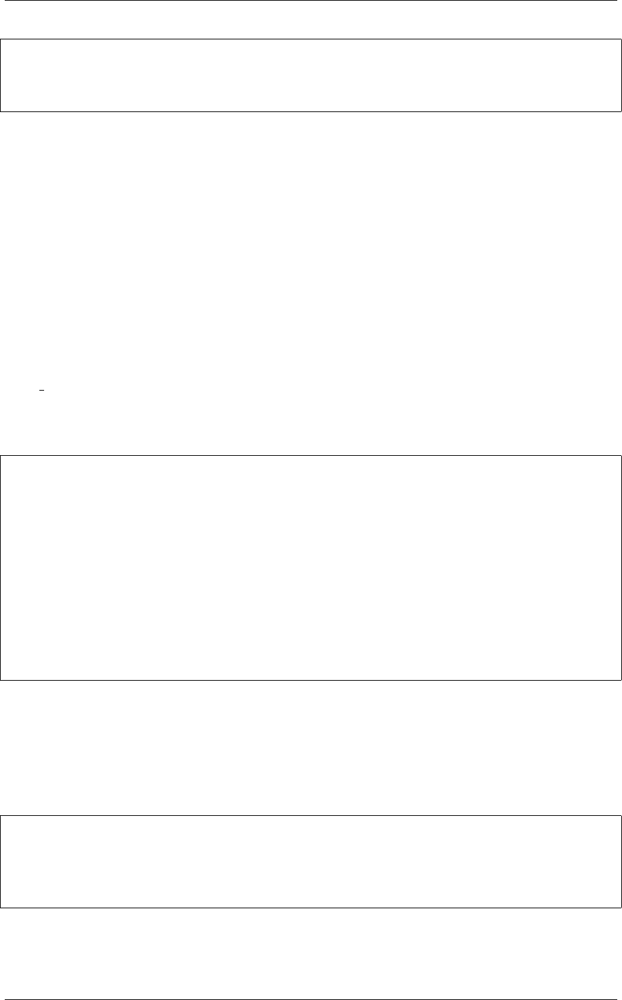

《Python Cookbook》第三版, Release 2.0.0
W
r
d
>>>
3.12 1.12 序列中出现次数最多的元素
3.12.1 问题
怎样找出一个序列中出现次数最多的元素呢？
3.12.2 解决方案
collections.Counter 类就是专门为这类问题而设计的，它甚至有一个有用的
most common() 方法直接给了你答案。
为了演示，先假设你有一个单词列表并且想找出哪个单词出现频率最高。你可以这
样做：
words =[
'look','into','my','eyes','look','into','my','eyes',
'the','eyes','the','eyes','the','eyes','not','around','the',
'eyes',"don't",'look','around','the','eyes','look','into',
'my','eyes',"you're",'under'
]
from collections import Counter
word_counts =Counter(words)
#出现频率最高的 3个单词
top_three =word_counts.most_common(3)
print(top_three)
# Outputs [('eyes', 8), ('the', 5), ('look', 4)]
3.12.3 讨论
作为输入， Counter 对象可以接受任意的 hashable 序列对象。在底层实现上，一
个Counter 对象就是一个字典，将元素映射到它出现的次数上。比如：
>>> word_counts['not']
1
>>> word_counts['eyes']
8
>>>
如果你想手动增加计数，可以简单的用加法：
3.12. 1.12 序列中出现次数最多的元素 24